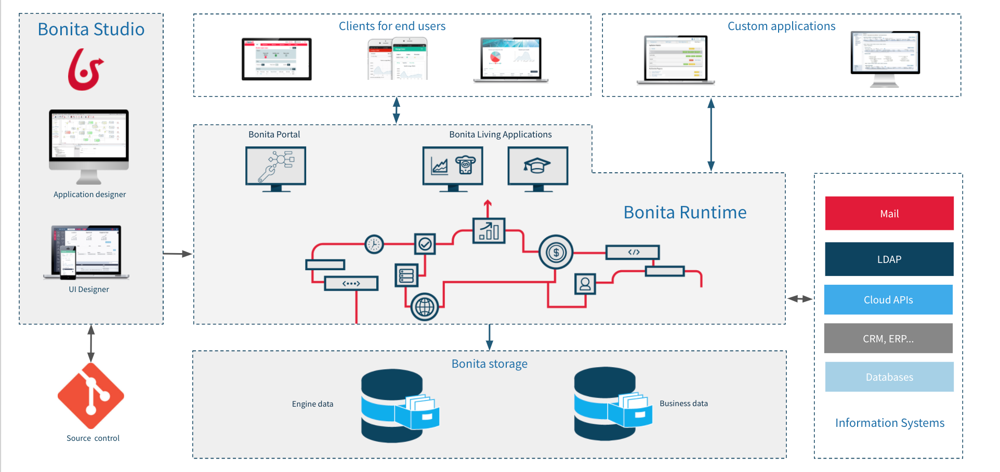
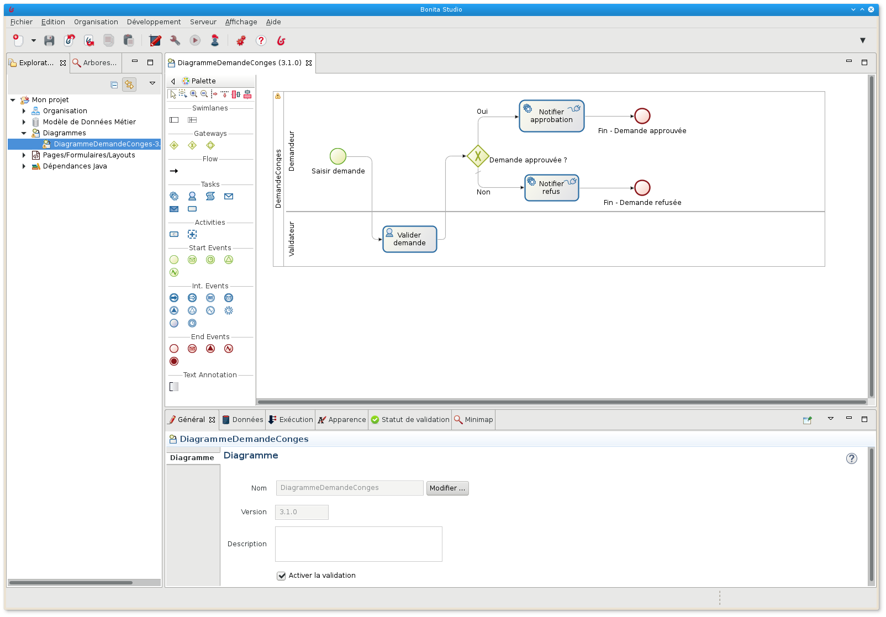
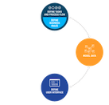

Delphine Coille
Goals of Bonita Camp
What ? Understand the concepts related to the creation of applications based on process automation and apply them..
How ? Theoretical and practical sessions based on a concrete example with Bonita
Checklist
- Download Bonita Camp resources from GitHub: https://github.com/Bonitasoft-Community/bonita-camp/releases
- Make sure that latest version of Studio is correctly installed (see exercises instructions)
- Install latest JDK 11 (or 8) if needed
- We recommend to use
 or
or  as your default web browser for development
as your default web browser for development
Agenda
Day 1
- Bonita solution and Bonita components
- Introduction to BPMN 2.0
- Data management (Business Data model and Contracts)
- User interface (Forms and Pages)
Day 2
- Users managements (Actors)
- Connectors
- Applications
- Deployment
Bonita solution
- Lower the volume of code required to build an application
- Rely on models (e.g. BPMN diagrams) to define the application
- Models improve collaboration during the definition of the application
- Process oriented approach ease collaboration for process execution
- Track process execution for monitoring and optimization
Lifecycle of a DPA project
Result: flexible and scalable applications

Bonita Components
Four main components:
- Bonita Studio
- Bonita UI Designer

- Bonita Engine

- Bonita Portal

Bonita platform architecture
Bonita Engine + Portal: packaged in a single JEE web application (war)
Studio embeds a test environment with Tomcat  + web application
+ web application
Package Tomcat or Docker image to simplify the installation of the server
to simplify the installation of the server
Bonita platform architecture
Studio: design and development environment
|  | Steps :
|
UI Designer: creation of the user interface
 |
|
Bonita Portal
End user and administration web interface
- Displays the list of available tasks
- Allows to deploy and configure forms, processes, business applications and related resources created with UI Designer
- Allows to manage the organisation
2 different types of portals:
- Natives user and administrator portals of Bonita
- User and Administrator Bonita Living applications
Portal Bonita

User application

Administrator application

Bonita Engine
In charge of process execution (no built-in UI)
Expose REST APIs
Based on Java SE
Packaged with the Bonita Portal in a Java web application
Requires:
- A Java EE application server
- A JDBC compliant transactional database
Introduction to BPMN 2.0
Standard notation (OMG) for process modeling. Key elements:
 | Pool: one pool per process |
| Start event: the beginning of a process | |
 | Human task: when a user is involved |
 | Service task: automatically run by Engine |
 | End event: trigger process archive |
| → | Transitions: used to link elements together |
Gateways
3 types of gateways:
| Exclusive |  |
|
 | Parallel | |
 | Inclusive |
- Conditions are defined on gateway outgoing transitions. No condition for parallel gateways
- Gateways should be placed in a symmetrical manner when possible to improve readability
Exercise 1
Modeling a basic process
If you don't already did it get instruction from GitHub:
https://github.com/Bonitasoft-Community/bonita-camp/releases
Data management

Types of data
Process data
- Parameters
- Documents
- Variables
Business data
- Dedicated to a process
- Shared between all processes through BDM (Business data model)
Model data: Business data model (BDM)
- Stores business data related to processes instances and/or applications
- Model defines objects to store business data
- Model is defined in the Studio
- From model Bonita generates Java classes (POJO) and creates database tables
- Persistence is managed by Engine
BDM: usage
- Declared in process definition business variables
- Create/Read/Update/Delete using: default values, operations, connectors...
- Can be shared among different process instances
- Lifecycle control by the developer
- APIs for read operations
The example of form data
- Stores and processes data displayed and updated in UIs
- Accessible in the user web browser
- Can be any type of JavaScript objects
- Initialized and updated by: user inputs, REST API calls, JavaScript code
- Never persisted
Other data type: documents
- Bonita provides a lightweight content management system
- References to documents are part of the process definition
- At runtime documents can be initialized, updated...
- Unlike BDM, documents are associated with a given process instance
Contracts
Set of required inputs + validation rules
Data sent by forms must satisfy a contract in order to:
- Start a process
- Execute a human task
Contributes to the decoupling of process logic and user interface
Architecture overview
Sending data from the form to the business variable

Exercise 2
Adding data and specifying contracts
Forms
Created with UI Designer with containers and widgets
Based on AngularJS and Bootstrap
Associated with tasks or process
2 types of forms:
- Editable forms that must satisfy a contract
- Process instantiation defined at pool level
- Human tasks (no forms on service tasks)
- Overview form (read-only) defined at pool level
Architecture overview
Display process variable in a form

Pages
Built in the same way as a form
Main difference is the execution context:
- Forms have information about process definition or process instance and task instance
- Pages have no context information
Pages can get BDM and process information or trigger actions using REST APIs
Group several pages together with a menu in order to build an application
Widgets
A set of widgets is available out of the box (text field, select, date picker...)
Custom widgets can be created with the UI Designer
You can also reuse contributions shared on community website
Fragments
Keys to reusability and time saving
Parts of element composed of widgets and/or containers
It has its own configuration and data...
Or expose the data in the pages that include them...
Exercise 3
Creating forms
Day 2
Agenda - reminder
Day 1
- Bonita solution and Bonita components
- Introduction to BPMN 2.0
- Data management (Business Data model and Contracts)
- User interface (Forms and Pages)
Day 2
- Users managements (Actors)
- Connectors
- Bonita applications
- Deployment
Who can do a task?
A set of users but protection against concurrent access is provided:
- User needs to be authenticated
- User needs to be known in Bonita user database
- Notion of candidate and assignee to a task
Support for LDAP, Active Directory, SAML V2, CAS, Kerberos includes in Enterprise Edition
Who can do a task?
2 options available for defining who can do a task in a process:
- Actors
- Actors filters
Those actors will be mapped to the organisation defined with:
- Groups
- Roles
- Users
Actors
- Declare one or several actors in process definition (just a name)
- Process configured to associate an actor with users:
- Directly to a set of specific users
- Indirectly using groups and roles of users
- Map actor directly to the task or using a lane
- Actors cannot use "live data"
Actor filters
Completely override the actor configuration
Produce a list of users based on input information and an internal logic
Executed when process reach a step to which the filter is mapped
Can be "refresh" using Engine API
Actors vs actor filters
| Benefits | Limitations | |
|---|---|---|
| Actors | Always up to date with organization | Mapping that can not rely on business/process data |
| Actor filters | Mapping that can be based on business/process data | Executed only once at task instantiation |
Who can start a process instance?
All users associated with the actor with "initiator" flag
Only one actor on a given process definition has this flag
For a given process instance the user who start it will be registered as the initiator of the instance
Exercise 4
Configuring actors
Connectors
Allows processes to interact with IS (opposite of the Bonita APIs)
A set of standard connectors is shipped in the Studio
Custom connectors can be:
- Implemented using the Studio or other Java IDEs thanks to the Bonita Maven archetype
- Imported from the Community website
Exercise 5
Using a connector to send an email
BPM-based applications
Combines processes together to handle a real business use case
Respects the MVC design pattern:
- Model is the business data model
- View is a combination of pages and process forms
- Controller is a set of processes
Applications are deployed and hosted in Bonita Portal
Interfaces between application's artefacts

Application deployment
2 types of application deployment
- Deployment for testing purpose in a LOCAL environment from the Studio
- Deployment in a DEVELOPMENT or PRODUCTION environment from the Portal
Deploy from Bonita Studio
The application descriptor is used to define the entire application structure.
- Forms
- Pages
- Layout
- Theme
The layout and theme are customizable and can be deployed from the studio.
Deployment steps on the server:
- Organisation then profiles
- API extensions then pages, layout, theme
- Business data model then processes
- Definition of the application
Exercise 6
Create a leave request application
Process Deployment
Main steps for process deployment:
| 1. Process configuration 2. Bar file generation |
Studio |
| 3. Bar deployment 4. Process configuration 5. Process activation |
Portal |
Thank you for your attention
Any questions?
Feel free to post them first on our dedicated Discord channel #bonita-camp-english,
and then please post them on Bonitasoft community website.
Extra Resources:
- Documentation - documentation.bonitasoft.com
- Corporate Website - bonitasoft.com
- Community Website- community.bonitasoft.com
- GitHub - github.com/bonitasoft-community